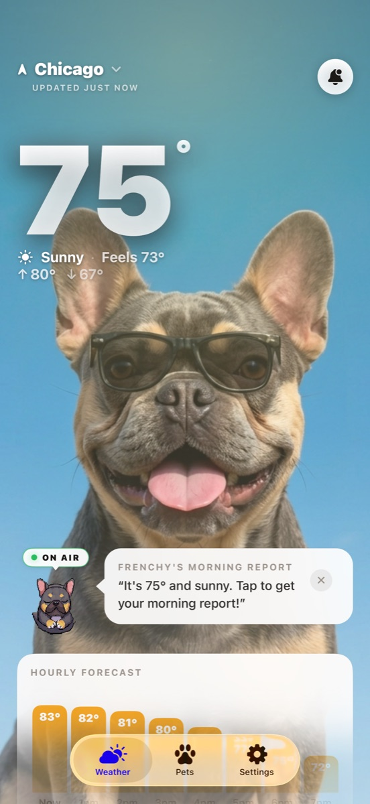

WeatherPets vs WeatherBug for Pet Owners
These two apps could not be more different in spirit. One is a serious meteorological toolkit built for radar, lightning, and severe-weather safety. The other turns your daily forecast into a moment with your pet. If you are a pet owner weighing them up, here is an honest look at what each one is really for.
What WeatherBug does well
WeatherBug, from Earth Networks, is a genuine powerhouse. It is built on one of the largest professional weather networks in the world, and it shows. You get real-time pinpoint forecasts, a deep hourly and 10-day outlook, and over twenty interactive maps covering radar, future radar, precipitation, pollen, and more. Its standout is severe-weather safety: Spark Lightning Alerts give mile-by-mile proximity warnings, and the app leans hard into fast, detailed storm tracking.
If you are a storm watcher, an outdoor-event planner, or you live somewhere with serious weather, WeatherBug is a legitimately great tool. It is free with ads, with an inexpensive ad-free subscription if you want to lose them. For raw data depth, it is in a different category than most cute weather apps, and we are not going to pretend otherwise.
What makes WeatherPets different
WeatherPets is not trying to win a radar arms race. It is built around a simple idea: make the forecast you check every single day genuinely delightful, by putting your own real pet at the center of it. You set up your actual dog, cat, guinea pig, or bunny, and the app generates that specific pet restyled for every condition, then has it narrate the day's weather in character.

It still covers the everyday essentials a pet owner actually needs:
- Home and lock screen widgets, with your pet plus the weather at a glance.
- Live Activities that track conditions in real time, handy for timing a walk around the heat or a passing storm.
- A full 10-day forecast with live tracking.
- Morning and evening reports from your pet, a little bookend to your day.
- A gallery of your pet restyled for sun, rain, snow, storms, and night.
What WeatherPets does not try to be is a professional storm-tracking suite. There is no twenty-layer radar console here. The trade is deliberate: less meteorological machinery, far more daily joy.
At a glance
The short version of the whole comparison, side by side.
| WeatherBug | WeatherPets | |
|---|---|---|
| Pet on screen | None; radar and data are the focus | Your real pet, AI-generated into scenes that match the live weather |
| Weather data source | Earth Networks' professional weather network, with 20+ interactive maps | Apple WeatherKit |
| Widgets | Weather widgets with customizable alerts | Small, medium, and large home screen widgets starring your pet |
| Severe weather alerts | Spark Lightning Alerts with mile-by-mile proximity warnings | Severe weather alert notifications |
| Personality & reports | None; a utilitarian toolkit | Morning and evening reports in your pet's voice |
| Price | Free with ads; inexpensive ad-free subscription | Free download; full features $9.99/mo or $34.99/yr |
| Platforms | iOS, Android, and web | iOS 17+ (iPhone) |
For the pet owner specifically
Most of a pet owner's weather decisions are not about tracking a supercell. They are small, daily, and practical: is it too hot for a midday walk, is rain coming before the evening loop, should tonight's outing be short because a storm is brewing and the dog hates thunder. WeatherPets is built around exactly those calls. The morning report flags what is coming so you can plan, the Live Activity tracks a changing afternoon, and the widget keeps the day's high one glance away. WeatherBug will absolutely tell you a storm is twelve miles out, which is great, but for the everyday rhythm of walks, paws, and heat, a friendly forecast you check without thinking tends to win. If storm anxiety is your dog's thing, pairing that daily heads-up with our guide to calming thunderstorm anxiety in dogs goes a long way.
The quick version
- WeatherBug is the safety-and-data heavyweight: radar, lightning proximity alerts, pollen, severe-weather tracking. Best for weather enthusiasts and storm-prone areas.
- WeatherPets is the joyful daily check-in starring your real pet, with widgets and Live Activities for the practical stuff.
- They can live side by side. Keep WeatherBug for when a storm is rolling in, and let WeatherPets be the one you actually smile at each morning.
Which one is right for you
Choose WeatherBug if you want maximum data and the fastest severe-weather alerts, and you do not mind a denser, more utilitarian app (and ads, unless you subscribe). For serious storm safety, it earns its reputation.
Choose WeatherPets if you are a pet owner who wants the everyday forecast to feel like a moment with your dog or cat, while still getting widgets and real-time tracking. If your real pet reporting the weather makes you grin, that feeling is the whole point. See how the broader field stacks up in our roundups of the best dog weather app for iPhone and the top 5 weather apps for iPhone, and you can find WeatherPets right in the App Store weather category.